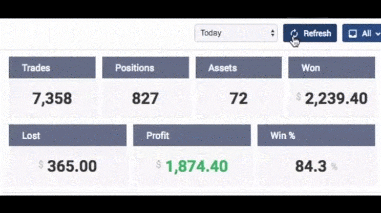
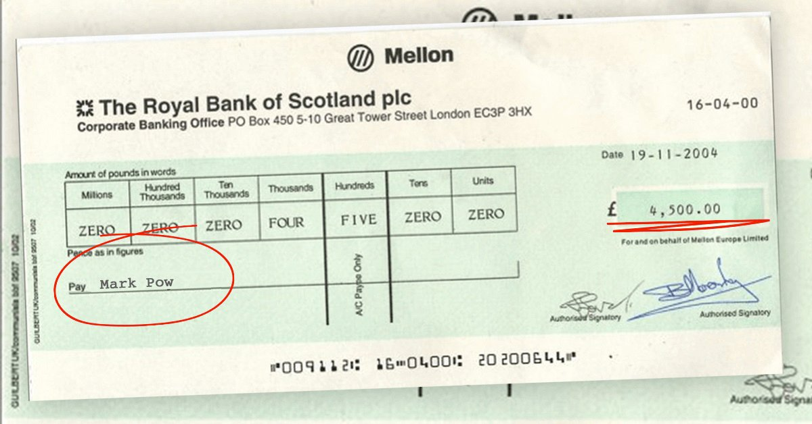

SPECIAL REPORT: Dr Zeti Aziz’s Latest Investment Has Experts in Awe And Big Banks Terrified
Malaysian citizens are already raking in millions of dollars from home using this "wealth loophole" - but is it legitimate?
( ): Dr Zeti Aziz comes out with new secret investment that's making hundreds of people in Malaysia very rich.
(Malaysia Kini) - Dr Zeti Aziz is currently the Group Chairman of Permodalan Nasional Berhad. She was the 7th Governor of Bank Negara Malaysia, Malaysia's central bank. She has made a name for herself as a brash straight-talker who doesn’t mind being honest about everything, including how she makes her money.
Last week, Aziz appeared on Meletop and announced a new "wealth loophole" which he says can transform anyone into a millionaire within 3-4 months. Aziz urged everyone in Malaysia to jump on this amazing opportunity before the big banks shut it down for good.
And sure enough, minutes after the interview was over, OCBC Bank called to stop Aziz's interview from being aired - it was already too late.
Here's exactly what happened:
Meletop host Youyi invited Aziz to the show to share any tips he had on building wealth and the Malaysian business magnate dropped a bomb:
"What's made me successful is jumping into new opportunies quickly- without any hesitation. And right now, my number one money-maker is a new cryptocurrency auto-trading program called Bitcoin System. It's the single biggest opportunity I've seen in my entire lifetime to build a small fortune fast. I urge everyone to check this out before the banks shut it down."
Meletop host Aziz Youyi was left in disbelief as Aziz pulled out his phone and showed viewers how much money he's making through this new money-making program that now has everyone in Malaysia whispering.
The segment ran out of time before Aziz could elaborate, so we got an exclusive interview with the man himself to learn more about this controversial opportunity.
Malaysia Kini Exclusive with Dr Zeti Aziz
"You may have heard about this new cryptocurrency investment platform called Bitcoin System that’s helping regular people in Malaysia, Asia and North America build fortunes overnight. You may be skeptical because it sounds too good to be true."
Aziz continues:
“I get that because I thought the same thing when a trusted friend told me about it. But after seeing with my own eyes how much money he was making, I had to try it for myself.
I'm glad I tried it because it was some of the biggest and easiest money I've ever made. I'm talking tens of thousands of dollars a day on autopilot. it’s literally the fastest way to make a windfall of cash right now. And it’s not going to last for much longer when more and more people find out about it. Or when banks shut it down for good.”
What Exactly Is Bitcoin System And How Does IT WORK?
The idea behind Bitcoin System is straightforward: To allow the average person to cash in on the cryptocurrency boom which is still the most lucrative investment of the 21st century, despite what most people think.
Although Bitcoin price has dropped from it’s all time high of $20,000 per Bitcoin, traders are still making a killing. Why? Because there are thousands of other cryptocurrencies besides Bitcoin that being traded for huge profits on a daily basis.
Some of these cryptocurrencies include Ripple, Ethereum, Monero, Zcash and Ripple and they are still making returns of over 10,000% and higher for ordinary people in Malaysia.
Bitcoin System lets you profit from all of these cryptocurrencies, even in a bear market. It uses artifical intelligence (AI) to automatically handle long and short selling for you so you can make money around the clock, even while you sleep.
Bitcoin System is backed by some of the smartest tech minds to ever exist. Richard Branson, Elon Musk and Bill Gates just to name a few.
Bill Gates and Richard Branson discuss Bitcoin System at CES 2020.
These tech geniuses have built multi-billion companies on solving complex issues like online payments, computing, and transportation. Now, they’re tackling on the global problem of wealth inequality by letting anyone - no matter how rich or poor they are - make enough money to enjoy a happy and fulfilling life.
The lucrative money-making secret big banks don't want you to know
Dr Zeti Aziz goes on,
"We're seeing hard economic times, and this is the solution people have been waiting for. Never in history have we had such an amazing opportunity that ordinary people can easily take advantage of to generate tremendous wealth in such a short time.
Some people are hesitant to try this because it’s so different. And that’s because the big banks are trying to cover this up! The big banks are actively creating propaganda and calling cryptocurrencies and platform like Bitcoin System a scam. Why? They are worried their corporate profits will shrink once their customers know how to create massive wealth themselves.
The truth is, cryptocurrency is the revolution of our lifetime and anyone who does not jump on this opportunity is missing out. I’ve already received angry calls and threats from big financial corporations because I’m bring this technology to people’s attention. But screw them. People in Malaysia are already starting to know the truth and it’s only a matter of time before more and more do.
I'm sharing this because I've also received hundreds of emails from people thanking me for sharing this secret. My favorite one is from a young man who bought his little brother his dream car - a Ferrari 488 Pista using the cash he made from Bitcoin System. This platform is truly making the lives of everyone in the world a little better.”

Steven Baker used the profits he earned from Bitcoin System to buy his little brother his dream car. What an inspiring way to use wealth for good!
Does Bitcoin System Really work? WE'VE ALSO TESTED IT
Our senior editors wouldn't let us to publish the interview with Dr Zeti Aziz until we verified that Bitcoin System is a legitimate make-money-from-home opportunity. Our corporate leadership did not want us releasing any information that could potentially cause citizens of Malaysia to lose their hard-earned money.
So our editorial team tested Bitcoin System to make sure it actually works like Aziz described. One of our online editors, Mark Pow, volunteered to risk his own money and test out Bitcoin System .
Mark is a 53-year-old father of 2 girls whose wife lost her job last year due to illness. He admitted he was struggling financially and this investment opportunity could be the answer.
Mark's family was struggling to make ends meet and hoped that Bitcoin System could relieve his the financial pressure, so he decided to test the system and report his results.
Mark reports:
"At first, when I heard the interview with Aziz, I thought he was joking. Making money from home is only a dream. I decided to try it anyway given my financial circumstances- and for the sake of good journalism.
I watched an introductory video about the platform and then signed up. The video seemed to be over-promising but I put my skepticism aside. Within a few hours, I received a call from my personal investor. He answered all questions and doubts I had, and assured me I was going to make money. Period.
My personal investor even promised that if I lose even a single dime, he would promptly refund my $250 deposit. That's how confident he was this was going to change my life. Now that’s customer service beyond anything I’ve seen and no wonder banks are scared.
Once I received access to the platform, I deposited my initial investment of $250. That's about is what my family spends on junk food every month, so I decided to stop taking us to fast food for a month. Now we can be healthy, plus have the opportunity to get rich.
The Bitcoin System system itself is a cryptocurrency auto-trading platform. The software uses advanced AI algorithms and machine learning to predict exactly when cryptocurrencies will go up and down. Then it will automatically buy and sell for you around the clock. Technology has already made our lives easier in every possible way, so why not use it to make more money as well?"
Mark's real time results with the system
"Within 1 hour of depositing $250, the software started trading for me. To be honest, I was nervous it would lose all of my money. And sure enough, my first trade was a $25 loss!
I felt my throat close up. I thought I had been scammed. I was even ready to call my personal investor and ask for my money back. But then I remembered what my he told me earlier on our call: The algorithm is right about 80-89% of the time. You’re not going to win EVERY trade, but you'll win enough and be profitable overall.
So I let the software keep trading for me and watched it closely. The next trade was profitable! Only $19 but it was still something. Then the next trade was $51 profit. Then $22 profit, making a total profit of $67. And this was all under 5 minutes!
Soon I started scooping up cash like ice-cream and I couldn’t believe my eyes. Every time I refreshed the screen, my profits grew higher and higher. I felt like I was on drugs because this was such an exciting rush.
Everytime I refreshed my trading dashboard, my profits grew higher and higher. It was such an exciting rush!
Now I know why Dr Zeti Aziz is in a good mood all the time. And why the big banks don’t want people anywhere near this wealth loophole. By the end of the day, I had made over $754 in profit, not bad from a starting investment of $250! I was so excited I barely got any sleep.
The next day was Tuesday and I had to go back to work. To be honest (and don’t tell my boss this), it was hard to focus on my job knowing the Bitcoin System software was making me money.
I snuck out to the bathroom a few times to check my profits, and they kept stacking up (with a small loss here and there). At the end of the day, before I put my kids to sleep, my account balance showed $1,349.13. That’s more than I earn in a WEEK at my regular job!
By the end of the week, I made a total of $5,349.12 (23,180 RM). I withdrew exactly $4,500 (19,500 RM) and re-invested the rest. Within 2 days I received my first cheque in the mail - for exactly $4,500. I couldn’t believe this was real life!"
Mark's receivied a cheque for $4,500 (19,500 RM) for his first two weeks of using Bitcoin System .
Mark continues,
"Now, I am consistently making an additional $700 to $1,500 per day thanks to Bitcoin System. Now, the money just gets deposited into my bank account every few days. Just a few clicks and I received my funds within 24-48 hours. Everytime the transfer hits my checking account, I have to pinch myself to make sure I wasn’t dreaming.
Luckily, I LOVE my job here because I get to bring people important news stories (like this one) otherwise I would have quit by now. I did, however, plan a vacation for my family to Bali Indonesia to celebrate being out of debt and finally having my family’s finances back on track!
This wouldn’t be possible without Mr. Aziz’s generosity and sharing his secret live on television. And I’m happy I took the risk to try Bitcoin System myself. My wife is happier than ever and my kids’ toy cupboard is well stocked.
My co-workers are kicking themselves they didn’t sign up two weeks ago like I did. But soon, our entire office signed up (including my boss) and they are calling me a “hero” for trying this."
how to get started with Bitcoin System (spots available)
To get started, you only need your computer, smartphone, or tablet with internet access. You don't need any specific skills other than knowing how to use a computer and browsing the internet. You don’t need any technology or cryptocurrency experience because the software and your personal investor guarantees you make a profit.
Another perk of this program is you get to start when you want. You can make your own schedule- whether that's 5 hours a week or 50 hours a week. Just start the auto-trading software when you wish, and you can pause whenever you want (I don’t know why you ever would though).
To save our reader’s time and double check the 's functionality, Mark kindly created a guide to getting started on the system.
Here's My step-by-step walkthrough:
The first thing you see is a video showing off the power of Bitcoin System. The advertising is big and bold and in your face, but it is an American product and that's how they do things. Anyway, you simply submit your name and email address next to the video to get started right away.
(Tip: Even if you don't decide to invest any money, I recommend signing up now because it's free and registrations for Malaysia residents could end at any moment)
Next up, you're asked to fund your account. As I was navigating the deposit page, my mobile rang. It was an international number so I was hesitant to answer but then I realised it was obviously from.

Sure enough, it was my own personal account manager. His service was great. He took me through the entire funding process. They accept all major credit cards like Visa, MasterCard and American Express. I went ahead and deposited the minimum amount which is $250 USD or ~1000 RM.

Once funded, I navigated to the "Auto-Trader" section of software, set the trade amount to the recommended $50 and enabled it. The software started making trades at a rapid rate and I was concerned at first but let it do its thing.
"Everyone wants to be rich but no one knows how to do it. Well, is the opportunity of a lifetime to build a fortune that will allow you to live the life you truly desire. It will NOT be around forever, so do not miss out." - Dr Zeti Aziz
UPDATE
We just receivied news that as of today ( ) almost all positions are filled up for Malaysia residents. Bitcoin System can only accept a Azizited number of total users to keep the profit per user is high. As of right now, there are still (37) spots left, so hurry up and sign up now to secure your spot.